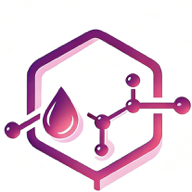
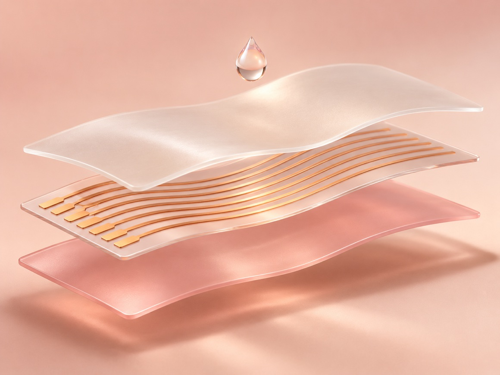

Repeated sampling
Every fingerstick reading needs a fresh prick, and the burden adds up over years of daily testing.

GlyviaStudent research concept · Research phase
Glyvia is a concept for a flexible in-mouth sensor that samples saliva, reads its glucose signal, and sends readings wirelessly to a phone. No needles involved.

01 · The problem
Source: International Diabetes Federation, IDF Diabetes Atlas, 11th edition, 2025
Every fingerstick reading needs a fresh prick, and the burden adds up over years of daily testing.
Continuous glucose monitors (CGMs) keep a filament under the skin for up to two weeks at a time.
Monitoring is lifelong, and households keep paying for consumables month after month.
02 · Existing alternatives
| Feature | Fingerstick | CGM | Lab saliva tests | Glyvia (target) |
|---|---|---|---|---|
| Sample | Capillary blood | Interstitial fluid | Saliva | Saliva |
| Needle-free | No | No, under-skin sensor | Yes | Yes |
| Readings | Single readings | Continuous estimates | External sampling | Repeated in-mouth readings |
| At home | Yes | Yes | No, lab-based | Yes |
| Monthly cost | Strips and lancets | e.g. Stelo (US): $89/month, 2 sensors up to 15 days each | Per test | Proposed $19.90/month |
Stelo price is Dexcom's US monthly subscription price and is not directly comparable to the Chinese market. All Glyvia figures are design targets or proposed prices and have not been validated.
03 · Our solution
The sensing surface sits on a thin oral tray and touches saliva directly.
A functionalized sensing layer turns glucose-related reactions into an electrical signal.
Readings upload wirelessly to a phone with a timestamp and a quality flag.

All figures above are design targets and have not been tested. "Valid readings" measures data completeness, not accuracy.
Technical reference: US 2026/0272335 A1, "Customized Wearable Saliva Biosensor for Real-Time Continuous Health Monitoring", published 17 Sep 2026.
04 · How we will validate it
Measure detection limit, sensitivity, response time, selectivity and signal drift in buffer and artificial saliva.
Record repeatability, valid-reading rate, and the effects of pH, food and saliva flow; assess wear comfort.
After ethics approval, collect saliva and blood readings from the same participants and use the paired data for individual calibration.
05 · Where we aim to differentiate
One wear session yields many readings without a new sample each time.
To prove: stable signal and valid readings across a wear session.
A sensing layer tuned for the low glucose levels found in saliva.
To prove: target detection limit and selectivity in real saliva.
A sensor core under 0.5 mm thick, mounted on an oral tray.
To prove: material biocompatibility and wear comfort.
Batch-to-batch consistency keeps cost within target.
To prove: batch repeatability and unit cost.
Each user's paired saliva and blood data builds a personal calibration model.
To prove: accuracy after calibration (MARD).
06 · Customers and go-to-market
07 · Business model
| Readers: 2,000 homes × $49 | $98.0K |
|---|---|
| Plans: 2,000 homes × 6 paid months avg × $19.90 | $238.8K |
| Total | $336.8K |
| Monthly plan: $19.90 − $8.67 recurring cost | $11.23 · 56% |
|---|---|
| Reader: $49 − $20 manufacturing | $29 · 59% |
$8.67/month = $2/week × 52 weeks ÷ 12. Margins exclude clinical, regulatory and customer acquisition costs.
08 · Roadmap
Planned schedule; actual progress may change as the research develops.
09 · Team
Biostatistics & Computational Research
Saliva–blood glucose correlation, sensor performance metrics, calibration methods and validation study design.
Biosensor & Biochemistry
Enzymatic vs. non-enzymatic sensing, electrode and flexible substrate materials, routes suited to oral wear.
Biological Feasibility
Saliva composition, effects of pH, food and flow rate, sampling methods, and biocompatibility of oral materials.
Existing Technologies & Innovation
Published saliva glucose devices, oral and flexible sensing, related patents, and which Glyvia claims still need proof.
Business & Market Research
Market size and target users, competitor pricing, willingness to pay, business model, and whether cost targets hold up.
10 · UN Sustainable Development Goals